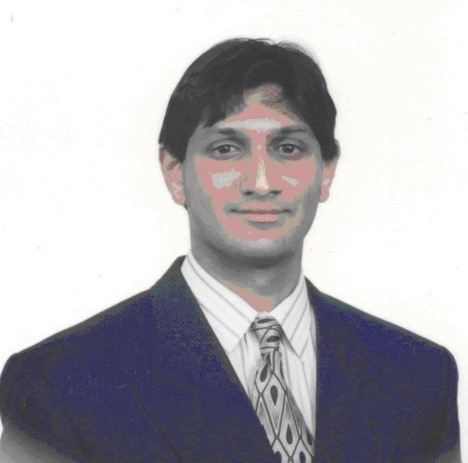

IoT DNS Flooding Attacks and Mitigation Methods
|
Abstract: A domain name system (DNS) is one of the most important infrastructures of Internet communication. It is also a crucial point that is subjected to attacks. The largest distributed denial-of-service (DDoS) attack on October 21, 2016, targeted a major DNS infrastructure named dynDNS. The Internet of Things (IoT) DNS flood attack made more than half of websites in the United States unreachable for a significant amount of time. The first part of the talk focuses on a deep analysis of the reasons behind IoT DNS flood attacks. The second part of the talk introduces some mitigation methods we proposed.
|
Professor Yang Xiao, IEEE Fellow
Department of Computer Science
The University of Alabama
Tuscaloosa, AL 35487-0290 USA
|
Brief Bio: Yang Xiao is a Full Professor at the Department of Computer Science, The University of Alabama, Tuscaloosa, AL, USA. He directed over 20 doctoral dissertations and supervised over 20 M.S. theses/projects. He has published over 300 Science Citation Index (SCI)-indexed journal papers (including over 60 IEEE/ACM TRANSACTIONS) and 300 Engineering Index (EI)-indexed refereed conference papers and book chapters related to these research areas. His research interests include cyber–physical systems, the Internet of Things, security, wireless networks, smart grids, and telemedicine.
Prof. Xiao was a Voting Member of the IEEE 802.11 Working Group from 2001 to 2004, involving the IEEE 802.11 (Wi-Fi) standardization work. He is an IEEE Fellow, an IET Fellow, and an AAIA Fellow. He served as a Guest Editor over 35 times for different international journals, including the IEEE Journal on Selected Areas in Communications (JSAC) in 2022-2023, IEEE TRANSACTIONS ON NETWORK SCIENCE AND ENGINEERING in 2021, IEEE TRANSACTIONS ON GREEN COMMUNICATIONS AND NETWORKING in 2021, IEEE Network in 2007, IEEE WIRELESS COMMUNICATIONS in 2006 and 2021, IEEE Communications Standards Magazine in 2021, and Mobile Networks and Applications (MONET) (ACM/Springer) in 2008. He also serves as the Editor-in-Chief of Cyber-Physical Systems Journal, International Journal of Sensor Networks (IJSNet), and International Journal of Security and Networks (IJSN). He has been serving as an Editorial Board Member or an Associate Editor for 20 international journals, including the IEEE Transactions on Network Science and Engineering (TNSE) since 2022, IEEE TRANSACTIONS ON CYBERNETICS since 2020, IEEE TRANSACTIONS ON SYSTEMS, MAN, AND CYBERNETICS: SYSTEMS from 2014 to 2015, IEEE TRANSACTIONS ON VEHICULAR TECHNOLOGY from 2007 to 2009, and IEEE COMMUNICATIONS SURVEYS AND TUTORIALS from 2007 to 2014. He serves/served as a Member of the Technical Program Committee for more than 300 conferences. He received the IEEE Transactions on Network Science and Engineering Excellent Editor Award in 2022 and 2023.
|
Security Considerations for Ultrawideband (UWB) Ranging
|
Abstract: Ultrawideband (UWB) radio technology has seen a renaissance due to its usage in ranging (i.e., determining the relative distance between two endpoints). This is because of UWB’s fundamental physical layer properties, which allow for precise ranging measurements. This allows for a variety of different applications where distance measurement between an initiator and a ranging endpoint (reader) can result in security-sensitive authorization. A commercially-available example of such an application is smartphone-enabled car door unlock, where the smartphone acting as a UWB initiator is determined to be within proximity of a UWB reader associated with the car door locking mechanism. Therefore, UWB ranging must be secure, and the UWB mode known as scrambled timestamp (STS) defined by the IEEE is used in associated applications. In this talk, several of the security-specific aspects of STS-based UWB ranging are presented which address published “black box” attacks on the UWB waveform. In addition, emerging applications for secure location-based services will also be presented that are enabled by UWB secure ranging.
|

Dr. Giridhar D. (Giri) Mandyam
Chief Security Architect
Qualcomm
|
Brief Bio: Dr. Giridhar D. (Giri) Mandyam was most recently the Lead Security Architect - IoT at Qualcomm. He has also worked at Rockwell International, Texas Instruments and Nokia. He was Chair of the S34-3 Ad Hoc Group on Presentation Logic and Service Frameworks for the Advanced Television Systems Committee (ATSC) and was a key contributor in development of the ATSC 3.0 specification. Moreover, he was Qualcomm’s Advisory Committee representative to the Worldwide Web Consortium (W3C), he has served as Chair of the W3C Geolocation Working Group. Dr. Mandyam is inventor or co-inventor of more than 70 issued US patents, and was recognized in 2017 by Qualcomm with the IP Achievement Award. He has also published over 80 conference and journal papers, and 5 book chapters. He is a co-author of the text Third-Generation CDMA Systems for Enhanced Data Services (Academic Press, 2002). He is a Senior Member of the IEEE and has been a member of the editorial board of the IEEE Transactions on Wireless Communications.
|
Hosts
 |
Dr. Arijit Roy
Assistant Professor
Department of Computer Science and Engineering
Indian Institute of Technology Patna, India
Website: https://arijit-iitkgp.github.io
|
 |
Dr. Ayan Mondal
Assistant Professor
Department of Computer Science and Engineering
Indian Institute of Technology Indore
Khandwa Road, Simrol, Indore 453552, India
Website: https://www.iiti.ac.in/people/~ayanm/
|
 |
Prrofessor Sudip Misra, PhD, FIEEE, FNAE, FNASc, FIET, FBCS, FRSPH, FIETE
ACM Distinguished Member
Alexander von Humboldt Fellow (Germany)
IEEE Communications Society Distinguished Lecturer
Professor & INAE Abdul Kalam Technology Innovation National Fellow
Department of Computer Science & Engineering
Indian Institute of Technology
Kharagpur-721302
West Bengal, India
Official Website: https://cse.iitkgp.ac.in/~smisra/
SWAN Group: https://cse.iitkgp.ac.in/~smisra/swan/
|
Webinar Registration
All participants need to pre-register by 5 PM (IST), February 14, 2024, by filling up the following form: Registration Link
Zoom sign-in details will be shared with the registered participants using the email address provided in the registration form.
The Webinar flyer is available here.
|
|
|